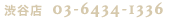

脱毛
エステ
よくある質問
店舗情報
お客様に安心していただけるよう、よくあるご質問をまとめました。この他にご質問がある方は気軽にお尋ねください。
脱毛について
Q. 脱毛は痛いですか？
A. ご安心ください。当店では痛みがより少ない最新のマシンを使用しております。ただし、しっかりと毛が生えている部分によっては、人によって多少ピリッとした刺激を感じることもございます。
Q. 脱毛の施術を受けて、どのくらいでむだ毛がなくなりますか？
A. 個人差はございますが、きちんと通っていただければ数回の施術で効果を感じていただけるかと思います。毛周期の関係で2〜3ヶ月に1度のペースをオススメしております。お客様それぞれの毛周期、毛量、毛質によって異なりますので、初回のカウンセリング時にご相談ください。
Q. 勧誘されるのが嫌なのですが、勧誘はありますか？
A. ご安心ください。「脱毛がすごく安いから勧誘があるのかと思った！」と言われることがありますが、お客様にとってより心地よい時間を過ごしていただけるように、無理な勧誘や押し売りなどはしておりません。
Q. 忙しくて定期的に施術を受けることができないかもしれませんが、大丈夫ですか？
A. ブランネージュでは、初回のカウンセリング時にお客様のお肌の状態を入念にチェックして、パッチテストを行ないます。お肌の様子を見てから施術を行ないますのでご安心ください。
Q. 敏感肌でも脱毛の施術を受けることができますか？
A. ブランネージュでは、初回のカウンセリング時にお客様のお肌の状態を入念にチェックして、パッチテストを行ないます。お肌の様子を見てから施術を行ないますのでご安心ください。
Q. 脱毛の施術をする前に自己処理は必要ですか？
A. はい。より効果的な施術をする為にお客様には施術の前日までに自己処理をしていただく必要がございます。自己処理が行なえない部位に関しましては、当日施術スタッフが処理いたします。
Q. 脱毛をする時のジェルが冷たくて嫌なのですが、どうにかなりませんか？
A. ブランネージュの脱毛では、ジェルは使用しておりません。冷たいジェルを使用しなくても脱毛の施術が行なえる最新マシンを導入しておりますので、ご安心ください。
Q. 予約は簡単に取れますか？
A. はい。脱毛のご予約も簡単にお取りいただけます。お電話からのご予約か
こちらのご予約フォーム
からご予約くださいませ。
エステについて
Q. フェイシャルエステの効果はどのくらいで感じられますか？
A. 個人差はございますが、数回の施術を続けることによってシミやそばかす、肌荒れ、赤身などが解消されていきます。毎日のお手入れによっても効果は異なりますので十分に保湿をすることを心がけください。お客様のお肌の状態に合ったお手入れのアドバイスをすることもございます。
Q. 敏感肌でもフェイシャルエステを受けられますか？
A. ブランネージュでは、初回のカウンセリング時にお客様のお肌の状態を入念にチェックして、パッチテストを行ないます。お肌の様子を見てから施術を行ないますのでご安心ください。
Q. エステやまつげエクステの施術にメイクをしていっても平気ですか？
A. エステはメイクをしたままの施術が可能となっております。まつげエクステにつきましては、施術の都合上、お目元のメイクは控えていただいております。メイクルームを完備しておりますので、施術後にお化粧直しをしていただけます。
料金について
Q. 表示されている金額以外に料金はかかりますか？
A. 表示されている金額以外の料金は一切かかりませんので、ご安心くださいませ。
Q. どうしてこんなに安いんですか？
A. ブランネージュでは広告をほとんど出しておりません。確かな技術を少しでも安く、低価格でお客様にご提供する為にコストカットに努めております。
Q. 月額払いはありますか？
A. 月額払いも導入しております。詳しくは初回のカウンセリング時、またはお電話にてお問い合わせくださいませ。
Q. クレジットカード払いはできますか？
A. はい。VISA、MASTER、AMERICAN EXPRESSがご利用いただけます。